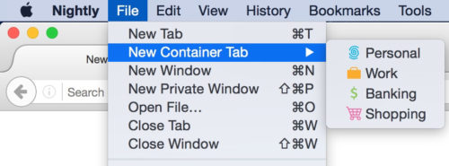
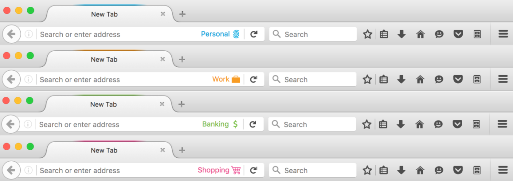
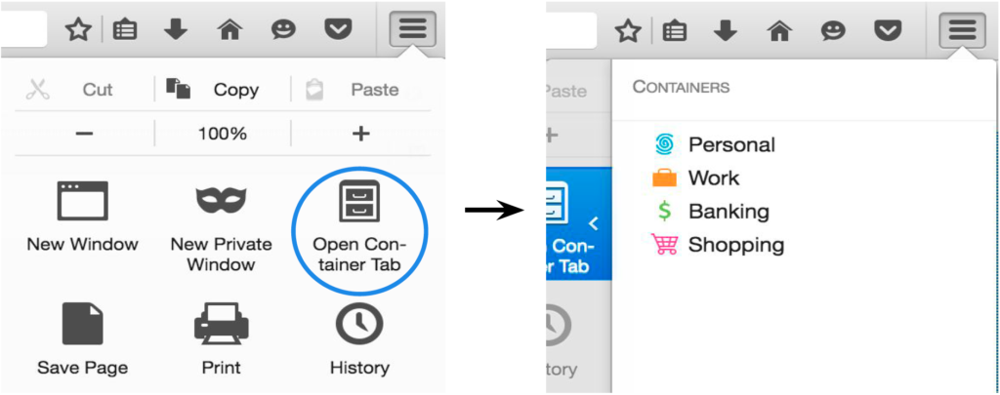
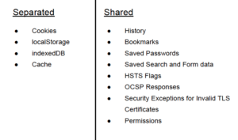

The Containers Feature in Firefox Nightly enables users to login to multiple accounts on the same site simultaneously and gives users the ability to segregate site data for improved privacy and security.
We all portray different characteristics of ourselves in different situations. The way I speak with my son is much different than the way I communicate with my coworkers. The things I tell my friends are different than what I tell my parents. I’m much more guarded when withdrawing money from the bank than I am when shopping at the grocery store. I have the ability to use multiple identities in multiple contexts. But when I use the web, I can’t do that very well. There is no easy way to segregate my identities such that my browsing behavior while shopping for toddler clothes doesn’t cross over to my browsing behavior while working. The Containers feature I’m about to describe attempts to solve this problem: empowering Firefox to help segregate my online identities in the same way I can segregate my real life identities.
With Containers, users can open tabs in multiple different contexts – Personal, Work, Banking, and Shopping. Each context has a fully segregated cookie jar, meaning that the cookies, indexeddb, localStorage, and cache that sites have access to in the Work Container are completely different than they are in the Personal Container. That means that the user can login to their work twitter account on twitter.com in their Work Container and also login to their personal twitter on twitter.com in their Personal Container. The user can use both accounts in side-by-side tabs simultaneously. The user won’t need to use multiple browsers, an account switcher[1], or constantly log in and out to switch between accounts on the same domain.
Simultaneously logged into Personal Twitter and Work Twitter accounts.
Note that the inability to efficiently use “Contextual Identities” on the web has been discussed for many years[2]. The hard part about this problem is figuring out the right User Experience and answering questions like:
- How will users know what context they are operating in?
- What if the user makes a mistake and uses the wrong context; can the user recover?
- Can the browser assist by automatically assigning websites to Containers so that users don’t have to manage their identities by themselves?
- What heuristics would the browser use for such assignments?
We don’t have the answers to all of these questions yet, but hope to start uncovering some of them with user research and feedback. The Containers implementation in Nightly Firefox is a basic implementation that allows the user to manage identities with a minimal user interface.
We hope to gather feedback on this basic experience to see how we can iterate on the design to make it more convenient, elegant, and usable for our users. Try it out and share your feedback by filling out this quick form or writing to containers@mozilla.com.
FAQ
How do I use Containers?
You can start using Containers in Nightly Firefox 50 by opening a New Container Tab. Go the File Menu and select the “New Container Tab” option. (Note that on Windows you need to hit the alt key to access the File Menu.) Choose between Personal, Work, Shopping, and Banking.

Notice that the tab is decorated to help you remember which context you are browsing in. The right side of the url bar specifies the name of the Container you are in along with an icon. The very top of the tab has a slight border that uses the same color as the icon and Container name. The border lets you know what container a tab is open in, even when it is not the active tab.

You can open multiple tabs in a specific container at the same time. You can also open multiple tabs in different containers at the same time:
2 Work Containers tabs, 2 Shopping Container tabs, 1 Banking Container tab
Your regular browsing context (your “default container”) will not have any tab decoration and will be in a normal tab. See the next section to learn more about the “default container”
Containers are also accessible via the hamburger menu. Customize your hamburger menu by adding in the File Cabinet icon. From there you can select a container tab to open. We are working on adding more access points for container tabs; particularly on long-press of the plus button.

How does this change affect normal tabs and the site data already stored in my browser?
The containers feature doesn’t change the normal browsing experience you get when using New Tab or New Window. The normal tab will continue to access the site data the browser has already stored in the past. The normal tab’s user interface will not change. When browsing in the normal context, any site data read or written will be put in what we call the “default container”.
If you use the containers feature, the different container tabs will not have access to site data in the default container. And when using a normal tab, the tab won’t have access to site data that was stored for a different container tab. You can use normal tabs along side other containers:
2 normal tabs (“Default Container tabs”), 2 Work Container tabs, 1 Banking Container tab
What browser data is segregated by containers?
In principle, any data that a site has read or write access to should be segregated.
Assume a user logins into example.com in their Personal Container, and then loads example.com in their Work Container. Since these loads are in different containers, there should be no way for the example.com server to tie these two loads together. Hence, each container has its own separate cookies, indexedDB, localStorage, and cache.

Assume the user then opens a Shopping Container and opens the History menu option to look for a recently visited site. example.com will still appear in the user’s history, even though they did not visit example.com in the Shopping Container. This is because the site doesn’t have access to the user’s locally stored History. We only segregate data that a site has access to, not data that the user has access to. The Containers feature was designed for a single user who has the need to portray themselves to the web in different ways depending on the context in which they are operating.
By separating the data that a site has access to, rather than the data that a user has access to, Containers is able to offer a better experience than some of the alternatives users may be currently using to manage their identities.
Is this feature going to be in Firefox Release?
This is an experimental feature in Nightly only. We would like to collect feedback and iterate on the design before the containers concept goes beyond Nightly. Moreover, we would like to get this in the hands of Nightly users so they can help validate the OriginAttribute architecture we have implemented for this feature and other features. We have also planned a Test Pilot study for the Fall.
To be clear, this means that when Nightly 50 moves to Aurora/DevEdition 50, containers will not be enabled.
How do users manage different identities on the web today?
What do users do if they have two twitter accounts and want to login to them at the same time? Currently, users may login to one twitter account using their main browser, and another using a secondary browser. This is not ideal, since then the user is running two browsers in order to accomplish their tasks.
Alternatively, users may open a Private Browsing Window to login to the second twitter account. The problem with this is that all data associated with Private Browsing Windows is deleted when they are closed. The next time the user wants to use their secondary twitter account, they have to login again. Moreover, if the account requires two factor authentication, the user will always be asked for the second factor token, since the browser shouldn’t remember that they had logged in before when using Private Browsing.
Users may also use a second browser if they are worried about tracking. They may use a secondary browser for Shopping, so that the trackers that are set while Shopping can’t be associated with the tasks on their primary browser.
Can I disable containers on Nightly?
Yes, by following these steps:
- Open a new window or tab in Firefox.
- Type about:config and press enter.
- You will get to a page that asks you to promise to be careful. Promise you will be.
- Set the privacy.userContext.enabled preference to false.
Can I enable containers on a version of Firefox that is not Nightly?
Although the privacy.userContext.enabled preference described above may be present in other versions of Firefox, the feature may be incomplete, outdated, or buggy. We currently only recommend enabling the feature in Nightly, where you’ll have access to the newest and most complete version.
How is Firefox able to Compartmentalize Containers?
An origin is defined as a combination of a scheme, host, and port. Browsers make numerous security decisions based on the origin of a resource using the same-origin-policy. Various features require additional keys to be added to the origin combination. Examples include the Tor Browser’s work on First Party Isolation, Private Browsing Mode, the SubOrigin Proposal, and Containers.
Hence, Gecko has added additional attributes to the origin called OriginAttributes. When trying to determine if two origins are same-origin, Gecko will not only check if they have matching schemes, hosts, and ports, but now also check if all their OriginAttributes match.
Containers adds an OriginAttribute called userContextId. Each container has a unique userContextId. Stored site data (i.e. cookies) is now stored with a scheme, host, port, and userContextId. If a user has https://example.com cookies with the userContextId for the Shopping Container, those cookies will not be accessible by https://example.com in the Banking Container.
Note that one of the motivations in enabling this feature in Nightly is to help ensure that we iron out any bugs that may exist in our OriginAttribute implementation before features that depend on it are rolled out to users.
How does Containers improve user privacy and security?
The Containers feature offers users some control over the techniques websites can use to track them. Tracking cookies set while shopping in the Shopping Container won’t be accessible to sites in the Personal Container. So although a tracker can easily track a user within their Shopping Container, they would have to use device fingerprinting techniques to link that tracking information with tracking information from the user’s Personal Container.
Containers also offers the user a way to compartmentalize sensitive information. For example, users could be careful to only use their Banking Container to log into banking sites, protecting themselves from potential XSS and CSRF attacks on these sites. Assume a user visits attacker.com in an non-banking-container. The malicious site may try to use a vulnerability in a banking site to obtain the user’s financial data, but wouldn’t be able to since the user’s bank’s authentication cookies are shielded off in a separate container that the malicious site can’t touch.
Is there any chance that a tracker will be able to track me across containers?
There are some caveats to data separation with Containers.
The first is that all requests by your browser still have the same IP address, user agent, OS, etc. Hence, fingerprinting is still a concern. Containers are meant to help you separate your identities and reduce naive tracking by things like cookies. But more sophisticated trackers can still use your fingerprint to identify your device. The Containers feature is not meant to replace the Tor Browser, which tries to minimize your fingerprint as much as possible, sometimes at the expense of site functionality. With Containers, we attempt to improve privacy while still minimizing breakage.
There are also some bugs still open related to OriginAttribute separation. Namely, the following areas are not fully separated in Containers yet:
- Some favicon requests use the default container cookies even when you are in a different container – Bug 1277803
- The about:newtab page makes network requests to recently visited sites using the default container’s cookies even when you are in a different container – Bug 1279568
- Awesome Bar search requests use the default container cookies even when you are in a different container – Bug 1244340
- The Forget About Site button doesn’t forget about site data from Container tabs – Bug 1238183
- The image cache is shared across all containers – Bug 1270680
We are working on fixing these last remaining bugs and hope to do so during this Nightly 50 cycle.
How can I provide feedback?
I encourage you to try out the feature and provide your feedback via:
- 2 minute survey
- Email containers@mozilla.com
- File a bug
Thank you
Thanks to everyone who has worked to make this feature a reality! Special call outs to the containers team:
Andrea Marchesini
Kamil Jozwiak
David Huseby
Bram Pitoyo
Yoshi Huang
Tim Huang
Jonathan Hao
Jonathan Kingston
Steven Englehardt
Ethan Tseng
Paul Theriault
Footnotes
[1] Some websites provide account switchers in their products. For websites that don’t support switching, users may install addons to help them switch between accounts.
[2] http://www.ieee-security.org/TC/W2SP/2013/papers/s1p2.pdf, https://blog.mozilla.org/ladamski/2010/07/contextual-identity/
[3] Containers Slide Deck
Ahmed wrote on :
Simon wrote on :
Chris wrote on :
Simon wrote on :
janw.oostendorp wrote on :
Florian wrote on :
Wliad Damouny wrote on :
Walid Damouny wrote on :
Walid Damouny wrote on :
BigBlueHat wrote on :
Valentin Born wrote on :
Flimm wrote on :
Trackback from ... [Trackback] on :
Ibrahim wrote on :
John is Ready to Work in Boulder wrote on :
Murz wrote on :
Murz wrote on :
Wayne wrote on :
Tony wrote on :
S3nd41 wrote on :
Jvzoo Review Site wrote on :
Danny wrote on :
Ovy wrote on :
Hinh Nen wrote on :
Erica wrote on :
Hoang Tran wrote on :
Urchance Review wrote on :
json formatter wrote on :